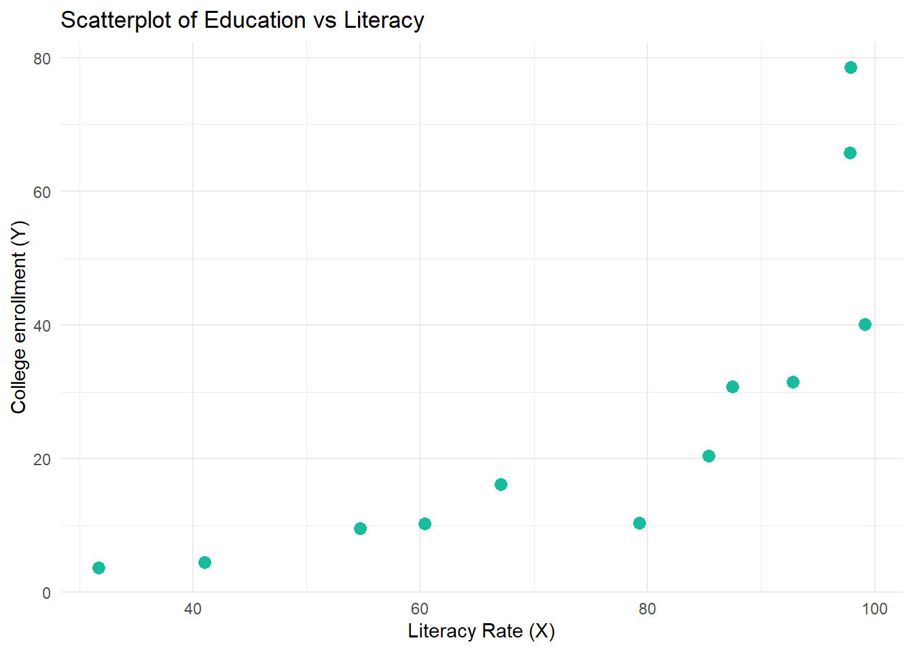
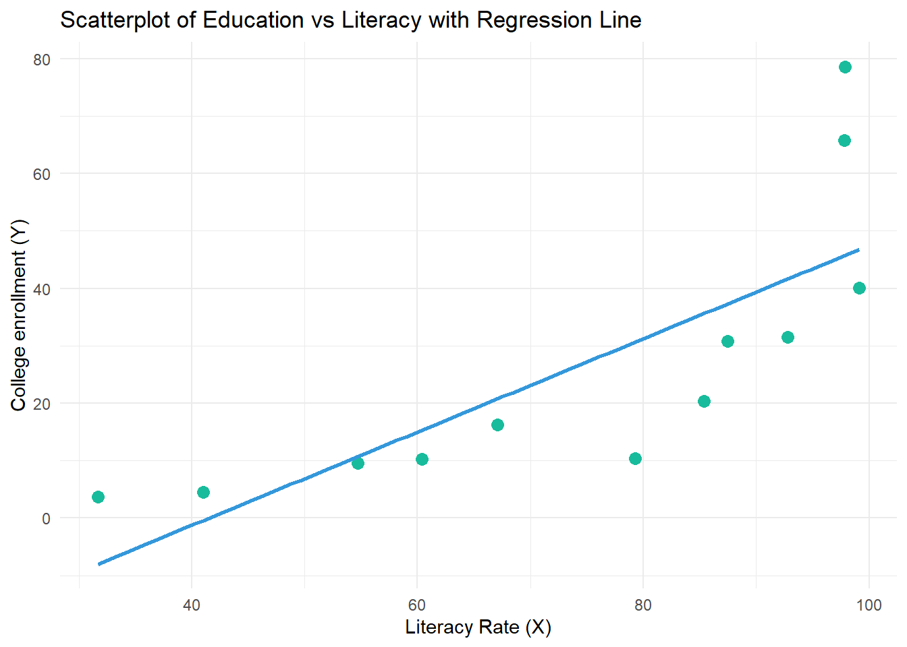

# install.packages("moderndive")
library(here)
library(tidyverse)
library(haven) # not core tidyverse
library(summarytools)
library(gtsummary)
library(moderndive)Code-along 08
Setup
Packages
Load the standard packages and install moderndrive
Create an example dataframe
# Create columns
literacy <- c(31.7, 79.3, 85.4, 41.0, 54.7, 97.9, 92.8, 67.1, 97.8, 60.4, 87.5, 99.1)
educ <- c(3.74, 10.4, 20.4, 4.46, 9.53, 78.6, 31.5, 16.2, 65.8, 10.3, 30.8, 40.1)
# Combine into a data frame
df <- data.frame(literacy, educ)
# View the data frame
print(df) literacy educ
1 31.7 3.74
2 79.3 10.40
3 85.4 20.40
4 41.0 4.46
5 54.7 9.53
6 97.9 78.60
7 92.8 31.50
8 67.1 16.20
9 97.8 65.80
10 60.4 10.30
11 87.5 30.80
12 99.1 40.10Look at descriptive statistics
moderndive::tidy_summary() returns commonly used summary statistics in a tidy format.
df |>
tidy_summary()# A tibble: 2 × 11
column n group type min Q1 mean median Q3 max sd
<chr> <int> <chr> <chr> <dbl> <dbl> <dbl> <dbl> <dbl> <dbl> <dbl>
1 literacy 12 <NA> numeric 31.7 59.0 74.6 82.4 94.0 99.1 23.2
2 educ 12 <NA> numeric 3.74 10.1 26.8 18.3 33.6 78.6 24.2Create a scatterplot.
# Create scatterplot
df |>
ggplot(aes(x = literacy, y = educ)) +
geom_point(color = "#18BC9C", size = 3) +
labs(
title = "Scatterplot of Education vs Literacy",
x = "Literacy Rate (X)",
y = "College enrollment (Y)"
) +
theme_minimal()
Add a regression line to the scatterplot.
# Create scatterplot with regression line
df |>
ggplot(aes(x = literacy, y = educ)) +
geom_point(color = "#18BC9C", size = 3) +
geom_smooth(method = "lm", se = FALSE, color = "#3498DB") +
labs(
title = "Scatterplot of Education vs Literacy with Regression Line",
x = "Literacy Rate (X)",
y = "College enrollment (Y)"
) +
theme_minimal()`geom_smooth()` using formula = 'y ~ x'
Regression
Use base R to run a regression.
lm(educ ~ literacy, data = df)
Call:
lm(formula = educ ~ literacy, data = df)
Coefficients:
(Intercept) literacy
-33.7449 0.8123 Run a correlation test.
cor.test(
~ educ + literacy,
data = df,
method = "pearson",
na.action = na.omit
)
Pearson's product-moment correlation
data: educ and literacy
t = 3.942, df = 10, p-value = 0.002766
alternative hypothesis: true correlation is not equal to 0
95 percent confidence interval:
0.3731885 0.9352545
sample estimates:
cor
0.7800287 Use get_regression_table() to run a regression.
model <- lm(educ ~ literacy, data = df)
get_regression_table(model)# A tibble: 2 × 7
term estimate std_error statistic p_value lower_ci upper_ci
<chr> <dbl> <dbl> <dbl> <dbl> <dbl> <dbl>
1 intercept -33.7 16.0 -2.10 0.062 -69.5 1.98
2 literacy 0.812 0.206 3.94 0.003 0.353 1.27Categorical IV
Add a categorical variable to the example df.
# Use mutate and case_when to add the country_group column
df <- df %>%
mutate(country_group = case_when(
literacy < 50 ~ "Low Literacy",
literacy >= 50 & literacy <= 80 ~ "Medium Literacy",
literacy > 80 ~ "High Literacy"
))
head(df) literacy educ country_group
1 31.7 3.74 Low Literacy
2 79.3 10.40 Medium Literacy
3 85.4 20.40 High Literacy
4 41.0 4.46 Low Literacy
5 54.7 9.53 Medium Literacy
6 97.9 78.60 High LiteracyUse get_regression_table() with a categorical IV.
model_2 <- lm(educ ~ country_group, data = df)
get_regression_table(model_2)# A tibble: 3 × 7
term estimate std_error statistic p_value lower_ci upper_ci
<chr> <dbl> <dbl> <dbl> <dbl> <dbl> <dbl>
1 intercept 44.5 6.94 6.42 0 28.8 60.2
2 country_group: Low Lit… -40.4 13.9 -2.91 0.017 -71.8 -9.03
3 country_group: Medium … -32.9 11.0 -3 0.015 -57.8 -8.10\(R^2\)
Use get_regression_points() to see the residuals.
model <- lm(educ ~ literacy, data = df)
get_regression_points(model)# A tibble: 12 × 5
ID educ literacy educ_hat residual
<int> <dbl> <dbl> <dbl> <dbl>
1 1 3.74 31.7 -8.00 11.7
2 2 10.4 79.3 30.7 -20.3
3 3 20.4 85.4 35.6 -15.2
4 4 4.46 41 -0.44 4.9
5 5 9.53 54.7 10.7 -1.16
6 6 78.6 97.9 45.8 32.8
7 7 31.5 92.8 41.6 -10.1
8 8 16.2 67.1 20.8 -4.56
9 9 65.8 97.8 45.7 20.1
10 10 10.3 60.4 15.3 -5.02
11 11 30.8 87.5 37.3 -6.53
12 12 40.1 99.1 46.8 -6.65Calculate \(R^2\)
my_test <- cor.test(
~ educ + literacy,
data = df,
method = "pearson",
na.action = na.omit
)
my_test$estimate cor
0.7800287 (my_test$estimate)^2 cor
0.6084447 Use get_regression_summaries() to see \(R^2\).
model <- lm(educ ~ literacy, data = df)
get_regression_summaries(model)# A tibble: 1 × 9
r_squared adj_r_squared mse rmse sigma statistic p_value df nobs
<dbl> <dbl> <dbl> <dbl> <dbl> <dbl> <dbl> <dbl> <dbl>
1 0.608 0.569 210. 14.5 15.9 15.5 0.003 1 12